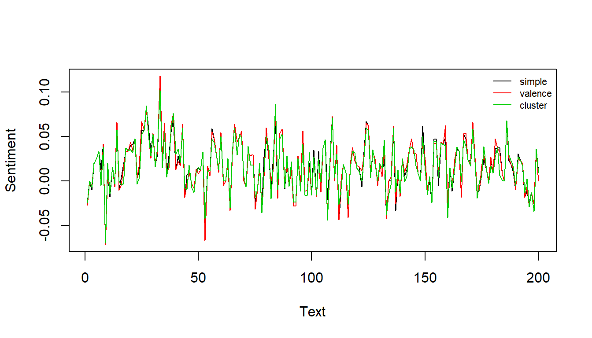

This tutorial provides a guide on how to perform the textual sentiment computation.
Preparation
library("sentometrics") library("quanteda") library("tm") library("stringi") library("data.table") library("lexicon") data("usnews") data("list_lexicons") data("list_valence_shifters")
A simple calculation of sentiment. Every score is the difference between the number of positive lexicon words (those with a score of 1) and the number of negative lexicon words (those with a score of –1) detected in the text.
s <- compute_sentiment( usnews[["texts"]], sento_lexicons(list_lexicons[c("GI_en", "LM_en")]), how = "counts" ) s
## id word_count GI_en LM_en
## 1: text1 213 -2 -2
## 2: text2 110 6 2
## 3: text3 202 1 -3
## 4: text4 153 1 2
## 5: text5 245 2 -7
## ---
## 4141: text4141 191 4 1
## 4142: text4142 147 3 0
## 4143: text4143 182 5 2
## 4144: text4144 168 2 -3
## 4145: text4145 181 1 -2sento_corpus objectThe same simple calculation as above, but using a sento_corpus object and the metadata features in the corpus. A "date" variable is always part of any sento_corpus, and is also considered a docvar.
corpus <- sento_corpus(usnews) corpus
## A sento_corpus consisting of 4,145 documents and 5 docvars.lexicons <- sento_lexicons(list_lexicons[c("GI_en", "LM_en", "HENRY_en")]) s <- compute_sentiment(corpus, lexicons, how = "counts") head(s)
## id date word_count GI_en--wsj GI_en--wapo GI_en--economy
## 1: 830981846 1995-01-02 213 0 -2 -2
## 2: 842617067 1995-01-05 110 6 0 0
## 3: 830982165 1995-01-05 202 0 1 0
## 4: 830982389 1995-01-08 153 0 1 0
## 5: 842615996 1995-01-09 245 2 0 0
## 6: 830982368 1995-01-09 212 0 3 3
## GI_en--noneconomy LM_en--wsj LM_en--wapo LM_en--economy LM_en--noneconomy
## 1: 0 0 -2 -2 0
## 2: 6 2 0 0 2
## 3: 1 0 -3 0 -3
## 4: 1 0 2 0 2
## 5: 2 -7 0 0 -7
## 6: 0 0 -3 -3 0
## HENRY_en--wsj HENRY_en--wapo HENRY_en--economy HENRY_en--noneconomy
## 1: 0 1 1 0
## 2: 2 0 0 2
## 3: 0 3 0 3
## 4: 0 3 0 3
## 5: 2 0 0 2
## 6: 0 1 1 0tm SimpleCorpus objectAnother simple sentiment calculation, this time using a tm package corpus object. Super flexible! The output is this time slightly different, as the scores are divided by the total number of words.
corpus <- SimpleCorpus(VectorSource(usnews[["texts"]])) corpus
## <<SimpleCorpus>>
## Metadata: corpus specific: 1, document level (indexed): 0
## Content: documents: 4145lexicons <- sento_lexicons(list_lexicons[c("GI_en", "LM_en", "HENRY_en")]) s <- compute_sentiment(corpus, lexicons, how = "proportional") s
## id word_count GI_en LM_en HENRY_en
## 1: text1 213 -0.009389671 -0.009389671 0.004694836
## 2: text2 110 0.054545455 0.018181818 0.018181818
## 3: text3 202 0.004950495 -0.014851485 0.014851485
## 4: text4 153 0.006535948 0.013071895 0.019607843
## 5: text5 245 0.008163265 -0.028571429 0.008163265
## ---
## 4141: text4141 191 0.020942408 0.005235602 0.068062827
## 4142: text4142 147 0.020408163 0.000000000 0.054421769
## 4143: text4143 182 0.027472527 0.010989011 0.065934066
## 4144: text4144 168 0.011904762 -0.017857143 0.011904762
## 4145: text4145 181 0.005524862 -0.011049724 0.011049724Even more flexibility in this example! You tokenize your corpus outside the sentiment computation function call, so you control exactly which words the lexicons are going to look into.
corpus <- sento_corpus(usnews) tks <- as.list(tokens(corpus, what = "fastestword")) lexicons <- sento_lexicons(list_lexicons[c("GI_en", "LM_en", "HENRY_en")]) compute_sentiment(corpus, lexicons, how = "counts", tokens = tks)
## id date word_count GI_en--wsj GI_en--wapo GI_en--economy
## 1: 830981846 1995-01-02 216 0 0 0
## 2: 842617067 1995-01-05 120 4 0 0
## 3: 830982165 1995-01-05 215 0 3 0
## 4: 830982389 1995-01-08 155 0 1 0
## 5: 842615996 1995-01-09 257 0 0 0
## ---
## 4141: 842613758 2014-12-23 198 4 0 0
## 4142: 842615135 2014-12-23 149 0 0 0
## 4143: 842617266 2014-12-24 189 4 0 4
## 4144: 842614354 2014-12-26 173 0 0 0
## 4145: 842616130 2014-12-31 186 -4 0 0
## GI_en--noneconomy LM_en--wsj LM_en--wapo LM_en--economy LM_en--noneconomy
## 1: 0 0 -1 -1 0
## 2: 4 3 0 0 3
## 3: 3 0 -3 0 -3
## 4: 1 0 3 0 3
## 5: 0 -5 0 0 -5
## ---
## 4141: 4 2 0 0 2
## 4142: 0 0 0 0 0
## 4143: 0 3 0 3 0
## 4144: 0 -3 0 0 -3
## 4145: -4 -2 0 0 -2
## HENRY_en--wsj HENRY_en--wapo HENRY_en--economy HENRY_en--noneconomy
## 1: 0 0 0 0
## 2: 3 0 0 3
## 3: 0 4 0 4
## 4: 0 3 0 3
## 5: 1 0 0 1
## ---
## 4141: 11 0 0 11
## 4142: 5 0 0 5
## 4143: 10 0 10 0
## 4144: 2 0 0 2
## 4145: 2 0 0 2We offer three main approaches to do the lexicon-based sentiment calculation: account only for unigrams (simple), consider valence shifting in a bigrams perspective (valence), or consider valence shifting in a cluster of words around a detected polarized word (cluster). Read the vignette for more details! Here we demonstrate how to plot the different approaches for comparison.
txts <- usnews[1:200, "texts"] vals <- list_valence_shifters[["en"]] lexValence <- sento_lexicons(list(nrc = hash_sentiment_nrc), vals[, c("x", "y")]) lexCluster <- sento_lexicons(list(nrc = hash_sentiment_nrc), vals[, c("x", "t")]) s1 <- compute_sentiment(txts, head(lexValence, -1))$nrc s2 <- compute_sentiment(txts, lexValence)$nrc s3 <- compute_sentiment(txts, lexCluster)$nrc s <- cbind(simple = s1, valence = s2, cluster = s3) matplot(s, type = "l", lty = 1, ylab = "Sentiment", xlab = "Text") legend("topright", col = 1:3, legend = colnames(s), lty = 1, cex = 0.7, bty = "n")

A textual sentiment computation on sentence-level, starting from a document-level corpus, and normalized dividing by the number of detected polarized words. Subsequently, the resulting sentence-level scores are aggregated into document-level scores.
corpus <- sento_corpus(usnews[, 1:3]) s <- compute_sentiment( corpus, sento_lexicons(list_lexicons["LM_en"]), how = "proportionalPol", do.sentence = TRUE ) s
## id sentence_id date word_count LM_en--dummyFeature
## 1: 830981846 1 1995-01-02 12 1
## 2: 830981846 2 1995-01-02 17 0
## 3: 830981846 3 1995-01-02 13 0
## 4: 830981846 4 1995-01-02 19 -1
## 5: 830981846 5 1995-01-02 19 -1
## ---
## 44800: 842616130 5 2014-12-31 19 -1
## 44801: 842616130 6 2014-12-31 26 0
## 44802: 842616130 7 2014-12-31 10 -1
## 44803: 842616130 8 2014-12-31 38 0
## 44804: 842616130 9 2014-12-31 25 0## id date word_count LM_en--dummyFeature
## 1: 830981846 1995-01-02 228 0.15555556
## 2: 842617067 1995-01-05 122 1.00000000
## 3: 830982165 1995-01-05 213 -0.15811966
## 4: 830982389 1995-01-08 158 1.00000000
## 5: 842615996 1995-01-09 259 -1.00000000
## ---
## 4141: 842613758 2014-12-23 200 0.39393939
## 4142: 842615135 2014-12-23 159 0.01639344
## 4143: 842617266 2014-12-24 191 0.56547619
## 4144: 842614354 2014-12-26 182 -0.88333333
## 4145: 842616130 2014-12-31 196 -0.52000000From these sentiment scores, we find the 4 documents where most positive sentiment scores were detected.
peakDocsPos <- peakdocs(sDocs, n = 4, type = "pos") peakDocsPos
## [1] "842614712" "842617067" "830982389" "830985188"corpusPeaks <- corpus_subset(corpus, docnames(corpus) %in% peakDocsPos)
quanteda packageThe term frequency-inverse document frequency statistic is widely used to quantify term importance in a corpus. Its use extends to sentiment calculation simply by adding the polarity of the words to the equation. This example shows that the tf-idf sentiment output from sentometrics is the same as the output obtained using the text mining package quanteda.
# ensure same tokenization for full comparability txts <- usnews$texts[1:100] toks <- stri_split_boundaries(stri_trans_tolower(txts), type = "word", skip_word_none = TRUE) # pick a lexicon lexIn <- list_lexicons$GI_en # quanteda tf-idf sentiment calculation dfmQ <- dfm(as.tokens(toks)) %>% dfm_tfidf(k = 1) posWords <- lexIn[y == 1, x] negWords <- lexIn[y == -1, x] posScores <- rowSums(dfm_select(dfmQ, posWords)) negScores <- rowSums(dfm_select(dfmQ, negWords)) q <- unname(posScores - negScores) # sentometrics tf-idf sentiment calculation lex <- sento_lexicons(list(L = lexIn)) s <- compute_sentiment(txts, lex, tokens = toks, "TFIDF")[["L"]]
R they equal?
all.equal(q, s)
## [1] TRUEMulti-language textual sentiment analysis requires only a few modifications to the corpus and lexicons setup. One needs first to have a non-numeric "language" feature to be integrated into a sento_corpus object. This feature’s task is to regulate the application of the input lexicons supplied in different languages to the texts based on their associated language tag.
corpusdt <- data.table( id = as.character(1:3), date = Sys.Date(), texts = c("Dit is goed. Bien, good.", "Çeci est bien. Goed, good.", "This is good. Goed, bien."), language = c("nl", "fr", "en"), ftr = 0.5 # a numeric feature ) corpus <- sento_corpus(corpusdt) corpus
## A sento_corpus consisting of 3 documents and 3 docvars.lexicons <- list(nl = sento_lexicons(list("lexNL" = data.frame("goed", 1))), fr = sento_lexicons(list("lexFR" = data.frame("bien", 1))), en = sento_lexicons(list("lexEN" = data.frame("good", 1)))) s <- compute_sentiment(corpus, lexicons, "counts") s
## id date word_count lexNL--ftr lexFR--ftr lexEN--ftr
## 1: 1 2020-04-25 5 0.5 0.0 0.0
## 2: 2 2020-04-25 5 0.0 0.5 0.0
## 3: 3 2020-04-25 5 0.0 0.0 0.5